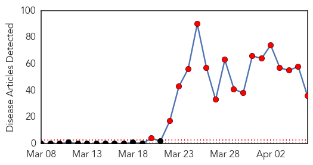
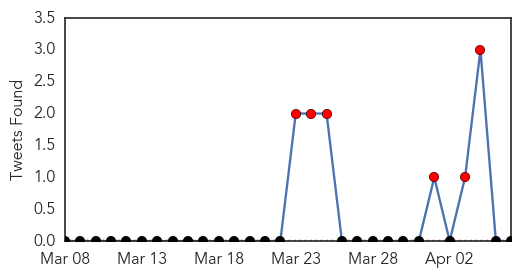
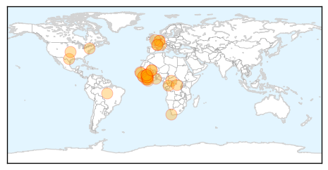
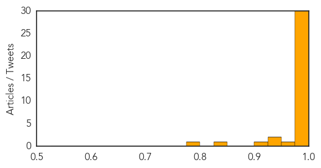

Ebola
30-Day Web Trend
17 alerts, 0 warnings

30-Day Twitter Trend
10 alerts, 0 warnings

Article Locations
Article Confidences
Top Articles:
- 1.000
- Ebola Treatment Center In Guinea – Attacked
- 1.000
- As Ebola spreads in Africa, how worried should West be?
- 1.000
- Mali government notifies WHO of four suspected Ebola cases
- 1.000
- Mob Attacks Ebola Virus Treatment Center in Guinea, Health Officials Issue Shutdown
- 1.000
- the edge of knowledge
- 1.000
- As Ebola spreads in Africa, how worried should West be?
- 1.000
- Crowd attacks Ebola treatment center in Guinea
- 1.000
- As Ebola spreads in Africa, how worried should West be?
- 1.000
- Ebola-hit Guinea calls for calm after attack on aid group
- 1.000
- West Africa gears up to fight Ebola
- 1.000
- South Africa on alert against Ebola - Xinhua
- 1.000
- UN agency urges vigilance amid Ebola outbreak in Guinea, Sierra Leone and Liberia
- 1.000
- Liberian health authorities confirm two cases of Ebola -WHO
- 0.999
- Mob attacks Ebola treatment centre in Guinea, suspected cases reach Mali
- 0.999
- Kenya : Senegal shuts land border with Guinea to prevent Ebola spreading
- 0.999
- Salt Lake City News, Sports, Archive
- 0.999
- Crowd attacks Ebola treatment center Republican American
- 0.999
- 4 tips vs Ebola spread in West Africa
- 0.999
- Crowd attacks Ebola treatment center in Guinea
- 0.999
- Mob attacks Ebola treatment centre in Guinea, suspected cases reach Mali
- 0.998
- Ebola Outbreak Could Become An 'Unprecedented Epidemic'
- 0.998
- Guinea Facing 'Unprecedented Epidemic'
- 0.997
- Ghana testing blood samples of suspected Ebola case, says official
- 0.996
- Suspected Ebola case investigated in Ghana
- 0.996
- Mali reports three suspected cases of Ebola
- 0.995
- Airport passengers screened for Ebola in Guinea
- 0.992
- Mob Attacks Ebola Treatment Site in Guinea
- 0.990
- UPDATE 1-Ghana testing blood samples of suspected Ebola case -official
- 0.983
- KATH investigates suspected Ebola case
- 0.983
- Guinea: Mining firms in lockdown as Ebola death tolls climbs
- 0.972
- First suspected case of Ebola disease recorded at KATH
- 0.949
- Ghana testing blood samples of suspected Ebola case -official
- 0.929
- Samaritan's Purse Is Working with the Government in Liberia to Help Contain the Spread of the Virus - Crossmap Christian News
- 0.905
- Health Highlights
- 0.841
- Page not found
- 0.792
- Ebola Epidemic Effecting Economy In Liberia
Top Tweets:
-
No tweets found for Apr 06, 2014
Unknown
30-Day Web Trend
0 alerts, 0 warnings

30-Day Twitter Trend
1 alerts, 0 warnings

Article Locations

Article Confidences

Top Articles:
- 0.997
- Lassa Fever Virus in Minnesota Traveler Coming from West Africa Confirmed
- 0.987
- Minnesota Traveler Returns to U.S with Lassa Fever
- 0.917
- Chicago Tribune
- 0.917
- Chicago Tribune
- 0.917
- Chicago Tribune
- 0.917
- Chicago Tribune
- 0.917
- Chicago Tribune
- 0.917
- Chicago Tribune
- 0.917
- Chicago Tribune
- 0.900
- My cat gave me TB - Health
- 0.883
- Health officials roll up sleeves for flu jab
- 0.871
- Experts decode germs' DNA to fight food poisoning
- 0.866
- Pro-Russian protesters storm the regional administrative building in Kharkiv
- 0.866
- Pro-Russia protesters seize third state building in eastern Ukraine -Ifax
- 0.866
- Pro-Russian protesters hang a banner and wave flags as they storm the regional government building in Donetsk
- 0.866
- A police office shouts as pro-Russia protesters storm the regional government building in Donetsk
- 0.866
- Pro-Russia protesters storm the regional government building in Donetsk
- 0.862
- Experts decode germs' DNA to fight food poisoning
- 0.827
- Experts decode germs’ DNA to fight food poisoning
- 0.824
- Scientists discover unnamed disease carried by deer ticks
- 0.819
- Experts decode germs' DNA to fight food poisoning
- 0.727
- New position statement on Lyme disease
- 0.637
- Malaria cases up 9 per cent in Ireland
- 0.630
- The fifth parasite: Malaysia studies new malarial strain - Health
- 0.571
- India’s election sparks claim of ‘politics of hatred’
- 0.563
- Video: Rwanda genocide chronology, 1994 to present day
- 0.563
- Can France and Rwanda ever reconcile over role in genocide?
- 0.542
- Mali appoints new PM after government resigns
- 0.534
- Health checks draw the young
- 0.530
- Pro-Russia protesters seize eastern Ukraine state buildings
- 0.530
- Possible signals from missing plane redirect search
- 0.523
- Punjab hospitals’ ICUs in bad shape
- 0.521
- Nigeria surpasses South Africa as continent's biggest economy
- 0.516
- Tonsillectomy Might Be Worth It for Some Adults
- 0.506
- Chicken farm incident in Palau under observation
Top Tweets:
- 0.725
- With today’s new cases, the total confirmed cases of MERS in S. Arabia reaches 167 including 66 deaths (~40 fatality rate) since Sep. 2012.